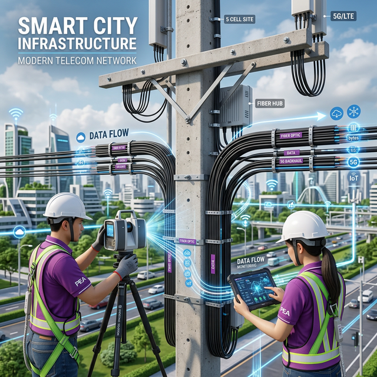
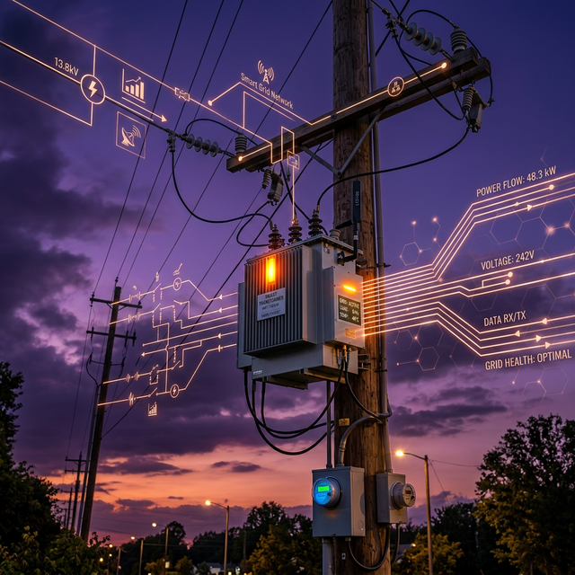
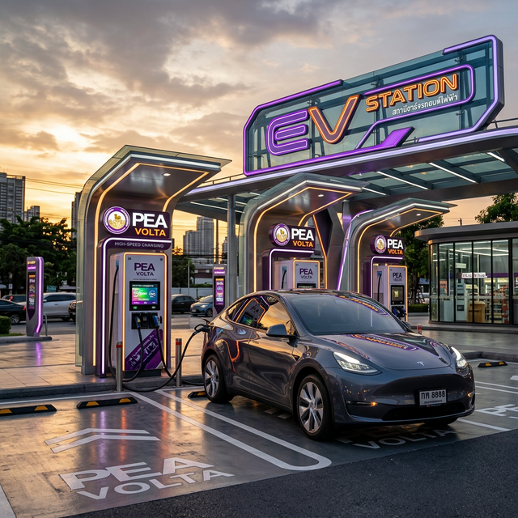

พนักงานช่างระดับ 6 | แผนก ระบบผลิตกระแสไฟฟ้า (ผรผ.กสฟ.น2)
กองสถานีไฟฟ้า การไฟฟ้าส่วนภูมิภาค เขต 2 ภาคเหนือ พิษณุโลก
มุ่งเน้นการนำเทคโนโลยีสมัยใหม่และนวัตกรรม AI มาประยุกต์ใช้ในการเพิ่มประสิทธิภาพระบบโครงข่ายไฟฟ้า และการบริหารจัดการสายสื่อสารบนเสาไฟฟ้าของ กฟภ. เพื่อความมั่นคงและยั่งยืนของพลังงานไฟฟ้าในพื้นที่ภาคเหนือ

ดำเนินโครงการสำรวจและจัดระเบียบสายสื่อสารบนเสาไฟฟ้า กฟภ. โดยใช้เทคโนโลยีการสำรวจที่แม่นยำ เพื่อลดความเสี่ยงด้านอัคคีภัยและเพิ่มความสวยงามของทัศนียภาพเมือง

ควบคุมการซ่อมบำรุงและอัพเกรดระบบไฟฟ้าแรงสูงในเขตภาคเหนือตอนล่าง เพิ่มประสิทธิภาพการจ่ายไฟและลดอัตราการเกิดไฟดับ (SAIFI/SAIDI)

เป็นวิทยากรและผู้เชี่ยวชาญด้านการติดตั้งระบบชาร์จรถยนต์ไฟฟ้า สนับสนุนการเปลี่ยนผ่านสู่พลังงานสะอาด ให้คำปรึกษาแก่ผู้ประกอบการและภาคครัวเรือน